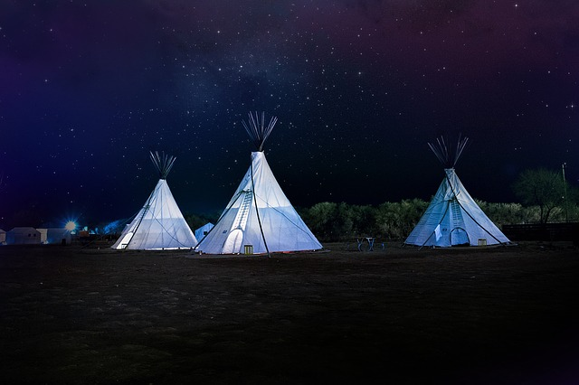
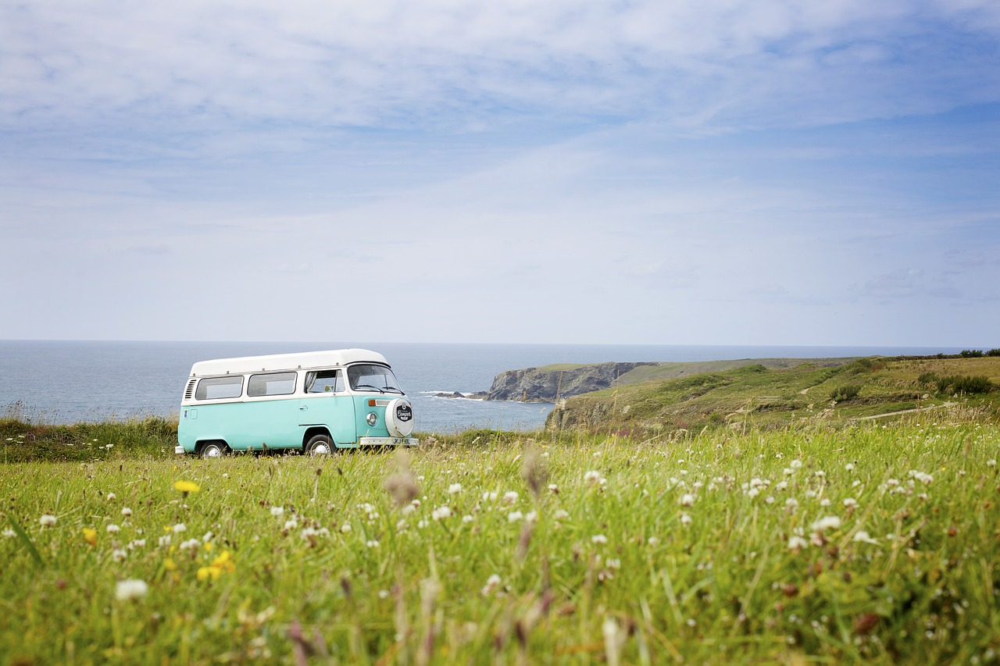

Located on the Broadwater side of MDrarine Parade, Southport (opposite Australia Fair), the Gold Coast's world class Broadwater Parklands offers a range of diverse locations and facilities for hire, designed for everything from large scale events to small family gatherings. There are plenty of shady spots for a picnic. You can also make use of the free barbecue facilities, and please note that dogs must be walked on a leash unless otherwise signed. The centrally located Parklands not only offers magnificent views and wide open spaces for community events, but there are also a number of more intimate locations such as the Pier and the Rooftop, featuring the spectacular backdrop of the Surfers Paradise skyline.
Marine Parade, Southport QLD 4215
27°58′1.39″S 153°25′3.24″E
PHONE: +61405818987
EMAIL: 2147239742@gmail.com
WEBSITE: HSIUDFUSFNFAUJFN.com.au
DIRECTION: Marine Parade, Southport QLD 4215
INSTARGRAM: www.instagram.com.southport
FACEBOOK: www.facebook.com.southport
Playground Hotshower Caravan power
Swimming Barbecue Houshold power
Gamesroom Kitchen Dryer
Surfers paradise in the background a well designed, large playground for young and old and the climate is perfect almost all year round-I just love the Gold Coast
This place is absolutely amazing. I visited here for the first time this past Saturday (19/08) and loved what I saw.
nice open space with good parking. great pier and the waterpark for children was excellent with a lifeguard. we were just passing through, would be great for all ages.